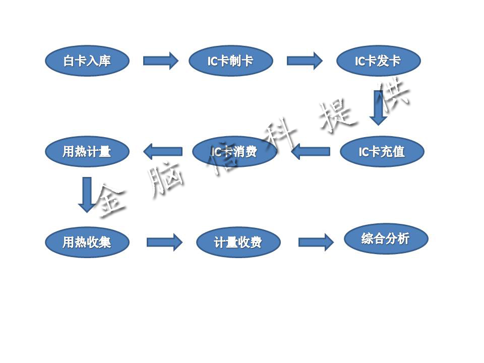

成功案例
成功案例
| 居民采暖热计量平台 |
“居民采暖热计量平台”是基于IC卡，嵌入式技术与互联网技术实现的综合性采暖计量收费平台，切实的解决了用暖缴费不合理，供暖收费困难等问题。
以往的供暖费用是简单基于住户的面积来征收的，这导致供暖收费的不合理性，也带来征收困难等问题。预付费并按计量扣费的方式成为必然趋势。
居民采暖热计量平台的业务流程：

居民采暖热计量平台的项目构成：
该系统实现了用户管理，充值管理，数据接口以及综合分析等功能.
居民采暖热计量平台的后台基于J2EE和Oracle数据库，前台基于Koala RIA平台实现，易于用户学习和操作。
采用ActiveX控件实现浏览器连接读写卡器和手持机。
该系统提供了两种数据采集方案，分别为：手持机方案和CAN方案。
Copyright © KBITC. All Rights Reserved. | 京公网安备 11010802033138号|京ICP备12010723号
京公网安备 11010802033138号|京ICP备12010723号
京公网安备 11010802033138号|京ICP备12010723号